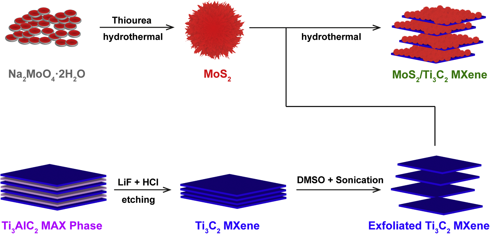

Material Elektrokimia
✓ Selesai
Mater. Res. Bull. (2025)
Sinergi 2D/2D MoS₂ dan Ti₃C₂ MXene: Akselerasi Kinetika Evolusi Hidrogen dalam Media Alkali
Menggabungkan tepi aktif molibdenum disulfida bermorfologi bunga dengan lembaran konduktif Ti₃C₂ MXene untuk memangkas hambatan transfer muatan dan mengikis overpotensial disosiasi air secara drastis dalam 1 M NaOH.

Overpotensial
421 mV
Tafel Slope
217 mV dec⁻¹
Resistansi R_ct
1.66 kΩ
R. Hasanah, M. Khalil* dkk. • Universitas Indonesia, Sunway Univ, Lancaster Univ, Tyndall Inst.